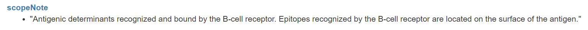
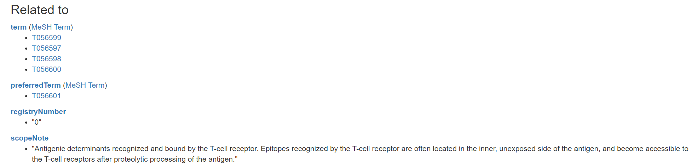

Hypothesis Ideation Tool - A Data Story
Below is a data story demostrating how a researcher might use this proposed hypothesis generation tool. The use case revolves around a researcher named Anna, who is specializes specifically in protein components of the coronavirus. She hopes to better understand how the virus interacts with human cells and to unveil answers about its silent transmission between humans.
Knowledge Graph Statistics:
The following statistics provide a high level summary of some of the data available to Anna in the knowledge graph she is quering.
MeSH Preferred Concepts related to 'Coronavirus'
Use Case:
Anna has heard about the collection of coronavirus-related research papers from the CORD-19 Open dataset that has been organized in a hypothesis generation tool. Due to the large amount of publications currently, she finds the tool interesting and begins her search.
First, she decides to search for hypothesis statements with variations of the term 'coronavirus'. In the tool itself, the hypothesis statements with its keyword are rendered in a user-friendly manner, as shown by the following examples.
This actual SPARQL query generates 36 relevant hypothesis statements, reducing her search of papers from the 2,794,994 in the entire collection of papers drastically:
Second, Anna decides to focus in on her chosen area of study-- proteins. She searches for papers where 'coronavirus' and 'protein' appear together in the abstract. She would like to isolate the titles also to better understand the context of the papers. There are 6 results for this query. Since the underlying knowledge graph contains provenance information, she can also see how recent the papers are. Moreover, she can conveniently use the paper url link to search for the paper.
However, looking at the entire paper is not necessary since she can use this tool to examine the keywords in the papers instead.
She is curious about the most recent paper from 2020: 'Molecular basis of COVID-19 relationships in different species: a one health perspective'.
For this paper, she can see the identified hypothesis and its keywords, as show below:
For example, Anna clicks on the T- and B- lymphocyte MeSH concepts, which brings here to the respective webpage (figures below). MeSH provides both a description of the concept as well more related terms in the MeSH library. Anna's research can continue with the an efficient click of a button.
Epitopes, B-Lymphocyte
Epitopes, T-Lymphocyte
This additional information allowed Anna to discover that B- and T- lymphocytes in fact have slightly different receptors structure. This makes Anna think that perhaps this is something to further research in relation to coronavirus and to design a full research question and hypothesis.
Summary:
The use case above demonstrates the following key aspects about the knowledge graph supporting the Ideation Tool:
- A researcher can search for relevant data depending on the date stored within the provenance information.
- Hypotheses from multiple papers and specified to certain keywords can be analyzed at once.
- Hypothesis ideation can be supplemented by external links that provide a researcher wth greater background reference knowledge.